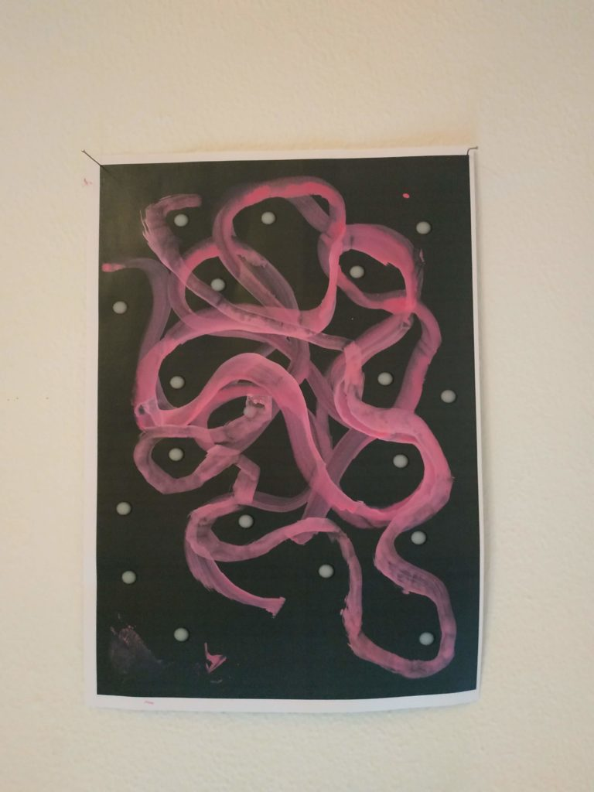
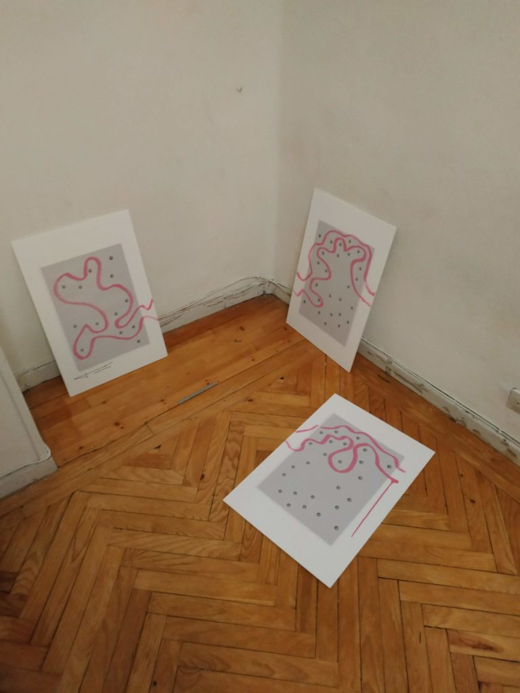
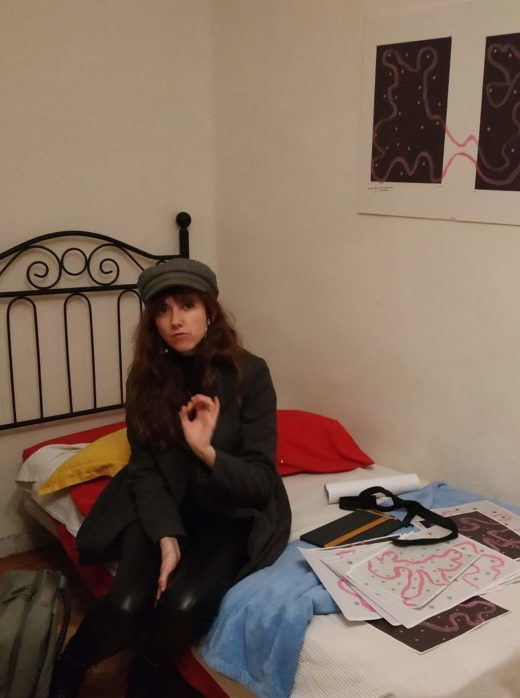

Inspiration can be quite a tricky topic, because I do believe every single random encounter I have had in my life has led me to this unique position where I am right now, writing to you about what it means to design, to do maths and to inte- grate both.
There are infinite possibilities and universes in which this decision did not happen at all, as well as I am sure there are many others in which it also occurred. But if I had to point down a single event it would probably be how I realized AI was quickly taking over designers’ jobs, creating ads, ban- ners... So I thought: how will designers face this new world where thousands of variants can be created with only one click?
Maths can be the answer to this, the one that gives the input to generate these infinite possibilities if we integrate algorithms with the power of randomness. If creativity is imagining the impossible, why not have the infinite as the starting point?
  